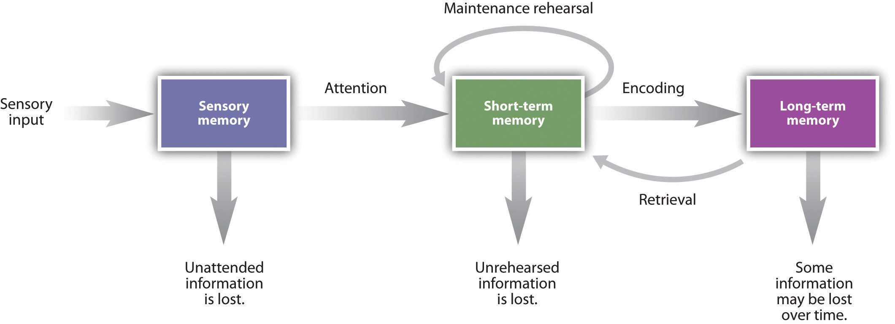

Marijuana
- A mild hallucinogen that comes from the leaves and flowers
- It induces a feeling of well-being, mild intoxication, and causes sensory distortions or hallucinations
- Affects reaction time and perception of surroundings
- Can be addictive
Status: Avoid at all costs
Drug Classification
| Drug Classification | Common Names of Forms | Main Effect | Adverse Effects |
|---|---|---|---|
| Stimulants | Stimulation, excitement | ||
| Amphetamines | Methamphetamine, speed, Ritalin, Dexedrine | Risk of addiction, stroke, fatal heart problems, psychosis | |
| Cocaine | Cocaine, crack | Risk of addiction, stroke, fatal heart problems, psychosis | |
| Nicotine | Tobacco | Addiction, cancer | |
| Caffeine | Coffee, tea, energy drinks | Addiction, high blood pressure | |
| Depressants | Relaxation | ||
| Barbiturates (major tranquilizers) | Nembutal, Seconal | Addiction, brain damage | |
| Benzodiazepines (minor tranquilizers) | Valium, Xanax, Halcion, Ativan, Rohypnol | Lower risk of overdose and addiction when taken alone | |
| Alcohol | Beer, wine, spirits | Alcoholism, health problems, depression, increased risk of accidents, death | |
| Opiates | Opium, morphine, heroin | Euphoria | Addiction, death |
| Hallucinogens | LSD, PCP, MDMA (ecstasy), Marijuana | Distorted consciousness, altered perception | Memory problems, bad "trips", suicide, overdose, death |
Classical Conditioning Applied to Human Behavior
Little Albert Experiment:
Conditioned Taste Aversion: Development of a nausea or aversive response to a particular taste because that taste was followed by a nausea reaction
Operant Conditioning
- Operant conditioning is learning voluntary behavior through pleasant and unpleasant stimuli
- Not all learning is involuntary behavior
- Classical conditioning is automatic, involuntary behavior; operant conditioning is voluntary behavior
The Concept of Reinforcement
- Reinforcement: When a stimulus/event increases the probability that a response will occur again (e.g., gambling machines with sound)
- Primary reinforcer: When the reinforcer satisfies basic needs like hunger, thirst, or touch
Three-Stage Process of Memory

Short-term Memory
Chunking: Bits of information are combined into meaningful units, or chunks, so more information can be held in short-term memory.
Long-term Memory
- Long-term Memory (LTM): The system of memory into which information is placed to be kept permanently.
- Duration: Not all memories are stored forever, but the important ones may be.
- Elaborative rehearsal: Method of transferring information from STM into LTM by making it meaningful.
Non-declarative Memory
- Non-declarative (implicit) memory: Type of long-term memory, including memory for skills, procedures, habits, and conditioned responses.
Anterograde Amnesia
- Loss of memory for events that occurred after the incident.
Declarative Memory
- A type of long-term memory.
Intellectual Disability
- A disorder where someone has deficits in mental ability and adaptive behavior.
- IQ falls under 70.
- Adaptive behavior is severely deficient for someone depending on age.
- Previously known as mental retardation or developmentally delayed.
- Intellectual disability is a spectrum from mild to profound.
Causes
- Poor environments
- Chromosome and genetic disorders
- Alcohol
- Dietary deficiencies
- Toxins in the environment
Gifted
- 2% of the population has an IQ above 130.
- Terman’s longitudinal study showed that gifted children grow up to be successful adults, mostly.
Emotional Intelligence
- Awareness of one’s emotions and being self-motivated.
- Viewed as a strong influence on success in life.
- Includes empathy.
Nature vs. Nurture
- Stronger correlations between IQ scores and genetic relatedness in twin and adoption studies.
- Heritability of IQ is estimated at 0.50.
- The Flynn Effect: IQ scores steadily increasing over time in developed countries.
- The Bell Curve: A book that criticized claims about the heritability of intelligence.
Language
- How cognition is affected by language.
- Language: How you speak ideas.
- Grammar: The rules that structure and use a language.
- Language allows children to think in words rather than just images.